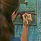
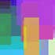

Porter College
Video Spotlights
Take a short video tour of Porter College highlights and landmarks, produced by our own media class.
News and Events
- OCTOBER 12, 2009 Nam id libero sed nunc fermentum posuere.
- SEP 1, 2009 Integer turpis pede, varius et, porta quis, iaculis ac, ligula
Uncommon People
 ERIC GONZALEZ
ERIC GONZALEZBUSINESS MANAGEMENT ECONOMICS
At UCSC I have come to realize that a small group of people can make a big difference, and I learned how to be dedicated to an idea and see it through to the end. CONTINUE »
Porter Academics
Porter Activities
University of California Santa Cruz, 1156 High Street, Santa Cruz, Ca 95064
©2009 The Regents of the University of California. All Rights Reserved.